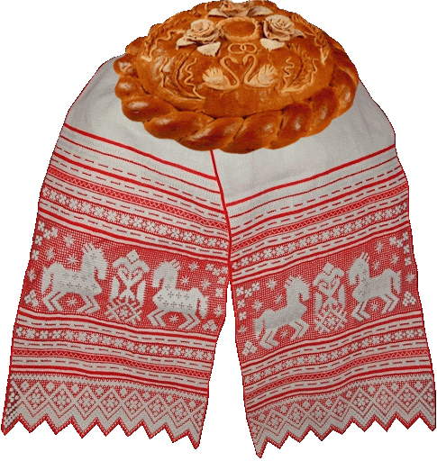

Интересные факты о хлебе
- Наши предки говорили, что хлеб — всему голова, считая его важнейшим продуктом питания. И были правы: даже если ваш обед будет состоять только из хлеба, вы гарантированно наедитесь. Ведь в этом продукте содержатся все необходимые организму крахмалы, жиры и белки.
- Самый первый хлеб был изготовлен не из злаков, а из желудей. А там, где не росли дубы, муку делали из орехов.
- Как гласит история, хлеб изобрели по ошибке более 7 500 лет назад. Первую буханку сделал древний египтянин, который случайно оставил смесь муки и воды в тёплой печи на ночь. Когда он вернулся, то обнаружил мягкое тесто, намного более аппетитное, чем твердые лепешки, которые он пытался готовить. Так появился первый хлеб на «закваске» — мягкий, пышный и пористый.
- Ещё в 2500 году до н.э. древние греки умели выпекать свыше 80 видов хлеба.
- Древние египтяне высоко чтили хлеб. На письме он обозначался тем же иероглифом, что и солнце — круг, по центру которого точка.
- В 1266-м году в Англии был принят закон, который регулировал массу хлебобулочных изделий, а также их стоимость и оплату рабо что он просуществовал целых 600 лет! Ведь только в 2008-м году правительство разрешило выпекать хлеб, который весит меньше 600 грамм!
- В Средние Века на территории Европы хлеб служил не только пропитанием, но и выступал в качестве… столовых приборов. Накрывая стол, хозяйки клали кусочки черствого хлеба, размером 10 на 15 см, каждому участнику трапезы. Затем в них накладывалась пища. После обеда «тарелки» отдавали бедным или скармливали домашним животным. Перестали использовать их только в четырнадцатом веке, когда посуду научились делать из дерева.
- В Древнем Египте хлеб имел такое огромное значение, в некоторых случаях он использовался как замена денег, а ещё его практически всегда оставляли в гробницах умерших.
- Хлеб в том или ином виде присутствует в рационе всех народов мира. Только выглядит и называется по-разному. У русских это каравай, у кавказцев — лаваш, у евреев — маца, у немцев — брецель и так далее.
- Интересно, что в средневековой Франции пекари были крупными кредитными брокерами, давая хлеб взаймы в виде своеобразного кредита или рассчитываясь им вместо валюты.
- ороль Людовик IV по этому поводу как-то произнёс: «Тот, кто контролирует хлеб, больше является правителем нации, чем тот, кто контролирует души людей».
- Самый большой каравай в мире был зарегистрирован на Софиевской площади в Киеве и попал в Книгу рекордов Гиннеса. Каравай испекли специально для «Праздника хлеба и урожая». Его вес составил 150 килограмм, высота — 65 сантиметров, а диаметр рекордсмена оказался 160 сантиметров.